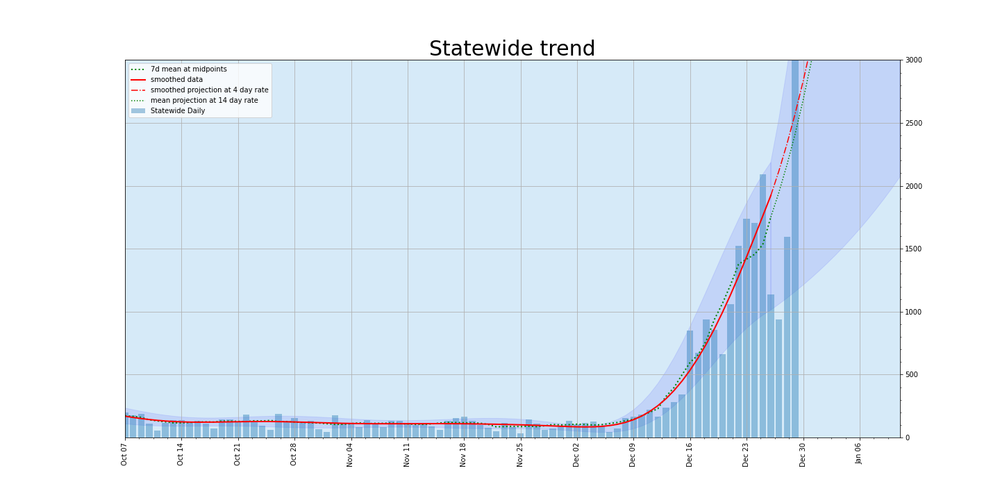
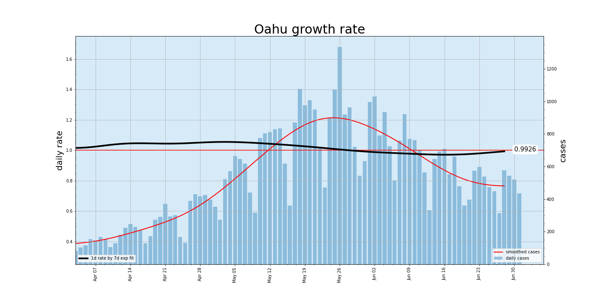

Hawaii COVID-19 Trends
7 Day Descriptive Stats
| Statewide total | Oahu | Hawaii island | Maui | Kauai | |
|---|---|---|---|---|---|
| mean | 2081.4 | 1356.1 | 254.7 | 295.3 | 175.3 |
| std | 256.2 | 167.6 | 85.6 | 99.8 | 84.1 |
| min | 1749.0 | 1053.0 | 91.0 | 180.0 | 90.0 |
| max | 2456.0 | 1505.0 | 342.0 | 491.0 | 283.0 |
<
Cases, Last 8 Days
| Date | Statewide total | Oahu | Hawaii island | Maui | Kauai |
|---|---|---|---|---|---|
| 2022-01-22 | 3186 | 2203 | 373 | 442 | 168 |
| 2022-01-23 | 2456 | 1408 | 274 | 491 | 283 |
| 2022-01-24 | 1749 | 1388 | 91 | 180 | 90 |
| 2022-01-25 | 2129 | 1505 | 219 | 306 | 99 |
| 2022-01-26 | 2290 | 1481 | 342 | 306 | 161 |
| 2022-01-27 | 1883 | 1053 | 237 | 316 | 277 |
| 2022-01-28 | 1869 | 1199 | 337 | 232 | 101 |
| 2022-01-29 | 2194 | 1459 | 283 | 236 | 216 |
Here is the data I'm using: daily.csv. It follows the DOH Epi curve (CSVDownload.csv) rather than the daily change in total cases. I'm excluding out of state cases. The dates sit between the reported date and the date in the DOH CSV. See the notes section below for my rationale.


The average rate over the last 2 weeks was about 0.961, std 0.016. Halving days about 18. Rt (6 day rate) about 0.790.


Oahu

One Oahu C&C status page


The average rate over the last 2 weeks was about 0.986, std = 0.034. Halving days about 50. Rt (6 day rate) around 0.920.

Notes
I am attempting to use the most official and suitable data for showing changing trends. At the moment I feel that the data from the time series
that DOH publishes as their "Epi Curve" is the best. Those data are a little different from the headline data DOH publishes. The headline numbers are the day over day change in
total cases with probable cases included. Because of the way corrections are handled that change in total cases often doesn't represent the number of cases that were recorded on
a single day. The Epi Curve data looks to be more closely linked to the dates that the cases were reported on.
On 11/15/2020 DoH skipped a report day and started reporting with an extra day delay. My report dates after 11/15 are one day earlier than Doh report dates.
On 5/19/2021 DoH started reporting probable cases as well as confirmed cases -- and broke all my scripts.
On 7/12/2021 DoH stopped updating its csv. For the report date 7/11 I am taking data from Star Advertiser which inludes probable cases.
On 7/18/2021 DoH appears to be updating a new CSV. here
On 9/13/2021 DoH added probable into the counts in their CSV. I'm including them since it'd be hard to automate removing them.